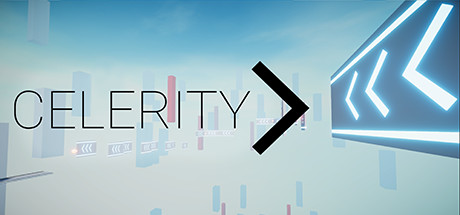

Título: Celerity
Plataforma: PC
Gênero: Plataforma
Celerity é um jogo de parkour em primeira pessoa lançado para PCs em 2021.
Naturalmente, é um jogo focado em velocidade e precisão, exigindo que o jogador pense rápido e tome decisões em uma fração de segundo.
Seu loop de jogo (termo técnico) consiste em desafiar o jogador a navegar de um Ponto A até um Ponto B, utilizando várias ferramentas de movimentação, como por exemplo:
- Correr
- Deslizar para ganhar ou manter velocidades mais altas do que a corrida permite.
- Um gancho de escalada (ou Grappling Hook) para poder se balançar entre certos pontos
- E um outro tipo de gancho, o chamado Hookshot, que puxa o jogador até um ponto específico em alta velocidade.
Celerity é composto por uma “campanha” que consiste de 3 mundos cada um com um nível de dificuldade maior que o anterior e 2 modos extras, um sendo para desafios e outro para o jogador poder brincar com as ferramentas de locomoção que Celerity oferece.
A trilha sonora, por mais que seja simples, faz um excelente trabalho em deixar os cenários mais emocionantes, com músicas cheias de energia, que seguem o ritmo típico do gênero dubstep.
No geral, é um excelente ponto de partida para qualquer um que tenha interesse no gênero de jogos de parkour, sendo simples sem ser sem graça, mas também permitindo que pessoas com mais experiência nesse gênero ainda se divirtam bastante.
Celerity é um jogo que vale muito a pena testar, e separamos algumas razões para isso, segue abaixo: